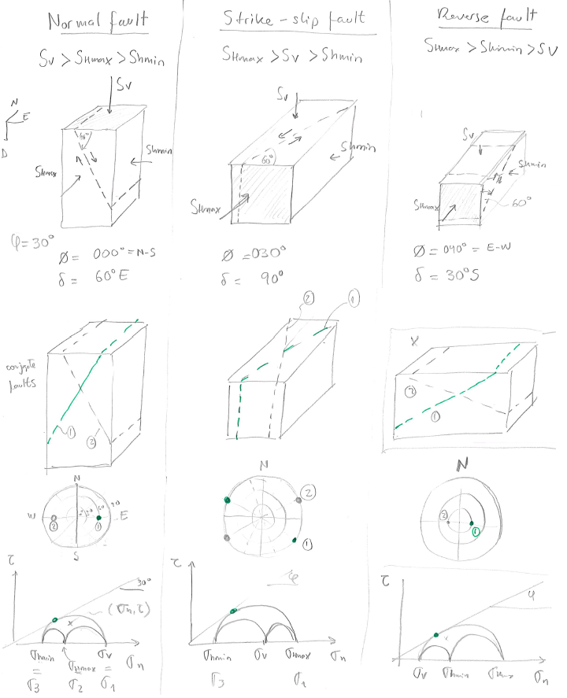
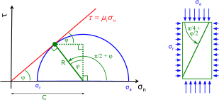

Next: Determination of normal and Up: Frictional strength of faults Previous: Stress and faulting regimes Contents
The ideal orientation of a hydraulic fracture is a plane perpendicular to the minimum principal stress  direction.
Similarly, we can also tell what would be the orientation of ideal conjugate pairs of shear fractures (faults) for a given state of stress.
The dip and strike will depend on
direction.
Similarly, we can also tell what would be the orientation of ideal conjugate pairs of shear fractures (faults) for a given state of stress.
The dip and strike will depend on  , , and the friction angle
, , and the friction angle  (Fig. 5.17).
Such ideal conjugate pair of shear fractures would be located:
(Fig. 5.17).
Such ideal conjugate pair of shear fractures would be located:
and ,
 |
PROBLEM 5.1: Find the ideal orientation of a hydraulic fracture and faults (shear fractures) at a location subjected to the following state of stress and conditions:
 is a principal stress
is a principal stress
 is N60
is N60 W
= 30.
W
= 30.
SOLUTION
First, recognize the planes of and and their orientations with respect to the geographical coordinate system.
The plane of in this case is a horizontal plane ( plane, a principal stress) and the plane of is a vertical plane perpendicular to .
A hydraulic fracture would be perpendicular to , in this case . Hence, the strike is
and the dip is
because is horizontal.
Faults will also depend on the friction angle. In this case, the failure angle is:
 going from the plane of to the plane of .
Thus, the strike of the two possible faults is
and the dips are
SE and
NW.
going from the plane of to the plane of .
Thus, the strike of the two possible faults is
and the dips are
SE and
NW.

PROBLEM 5.2: Find the ideal orientation of a hydraulic fracture and faults (shear fractures) at a location subjected to the following state of stress and conditions:
is a principal stress
 is 010
= 40.
is 010
= 40.
SOLUTION
First, recognize the planes of and and their orientations with respect to the geographical coordinate system.
The plane of in this case is a vertical plane ( plane) and the plane of is another vertical plane perpendicular to .
A hydraulic fracture would be perpendicular to , in this case . Hence, the strike is
and the dip is
because is horizontal.
Faults will also depend on the friction angle. In this case, the failure angle is:
going from the plane of to the plane of .
Thus, the strikes of the two possible faults are
 and
, the dip is
 .
.